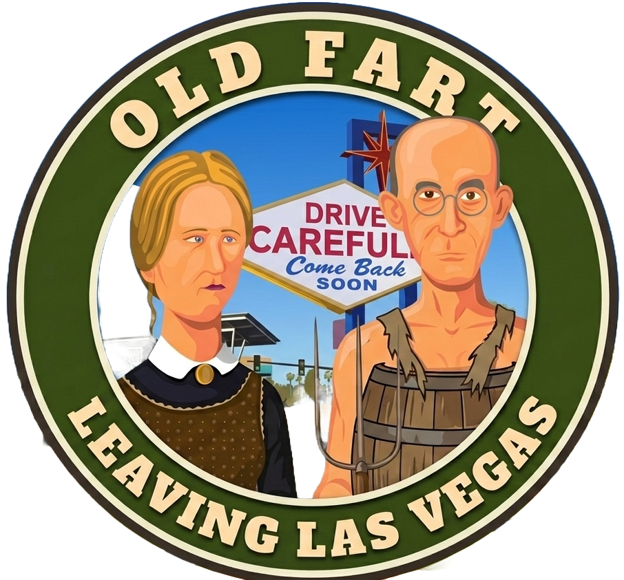
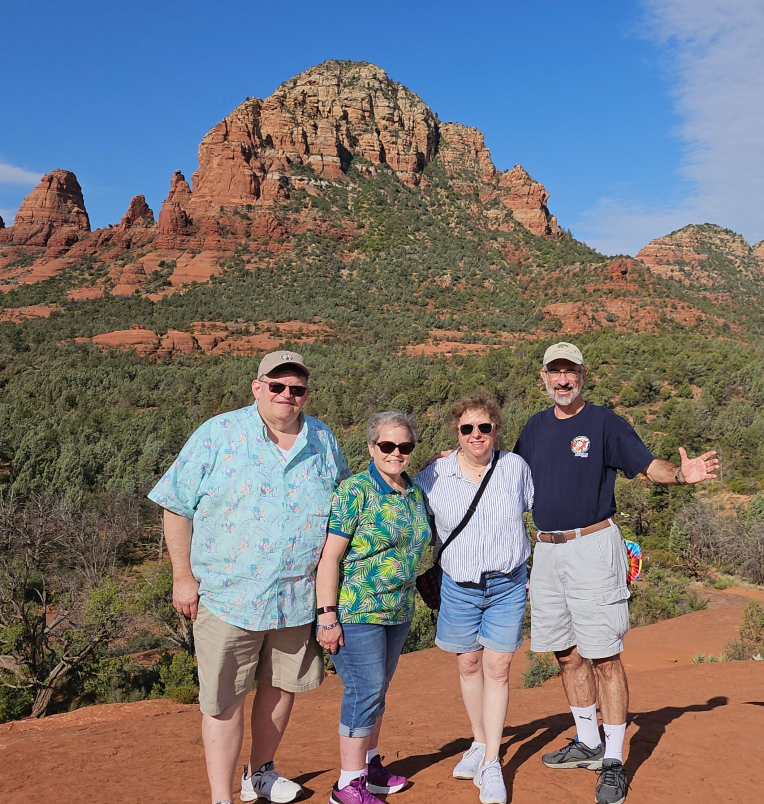
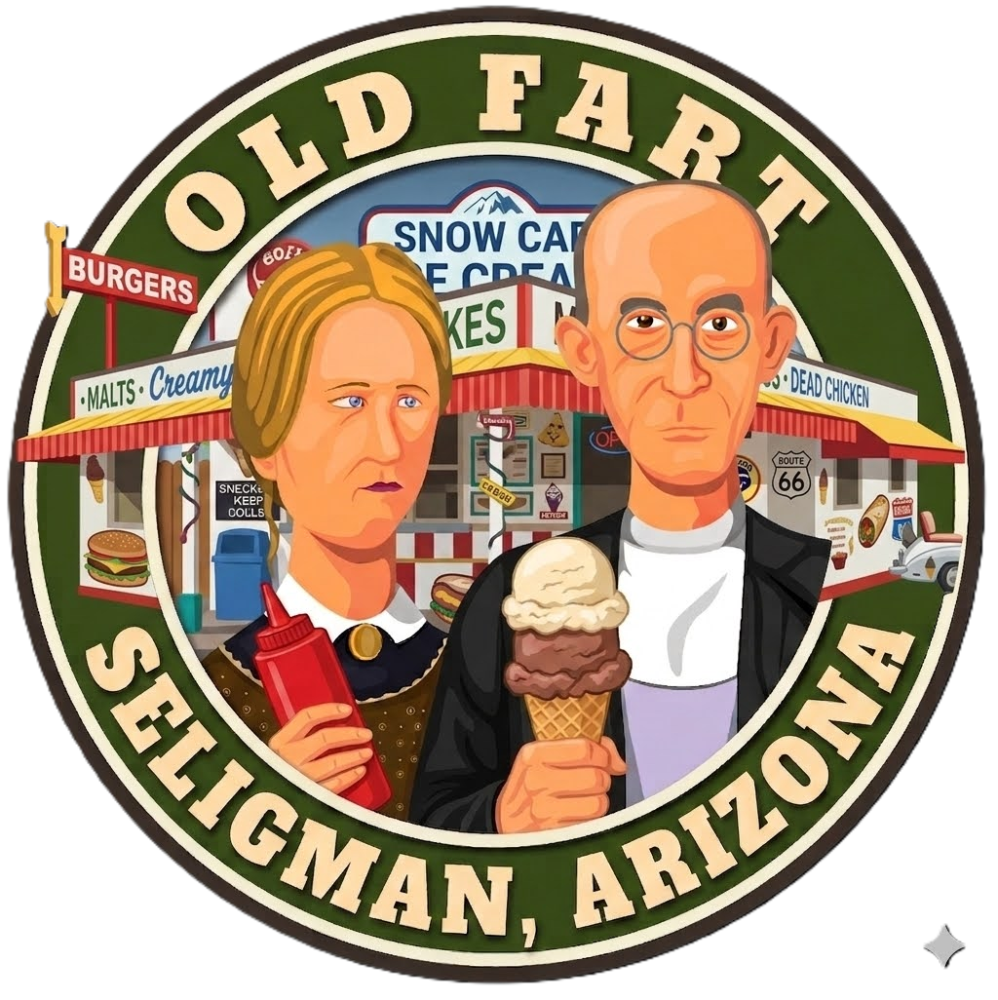
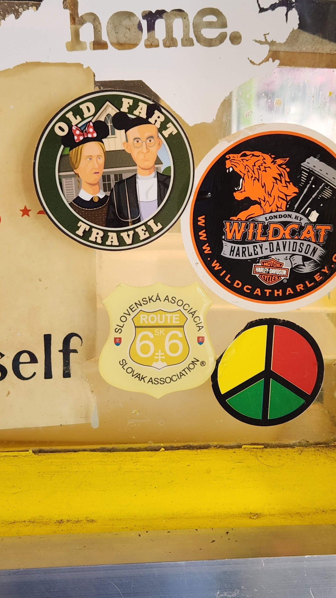
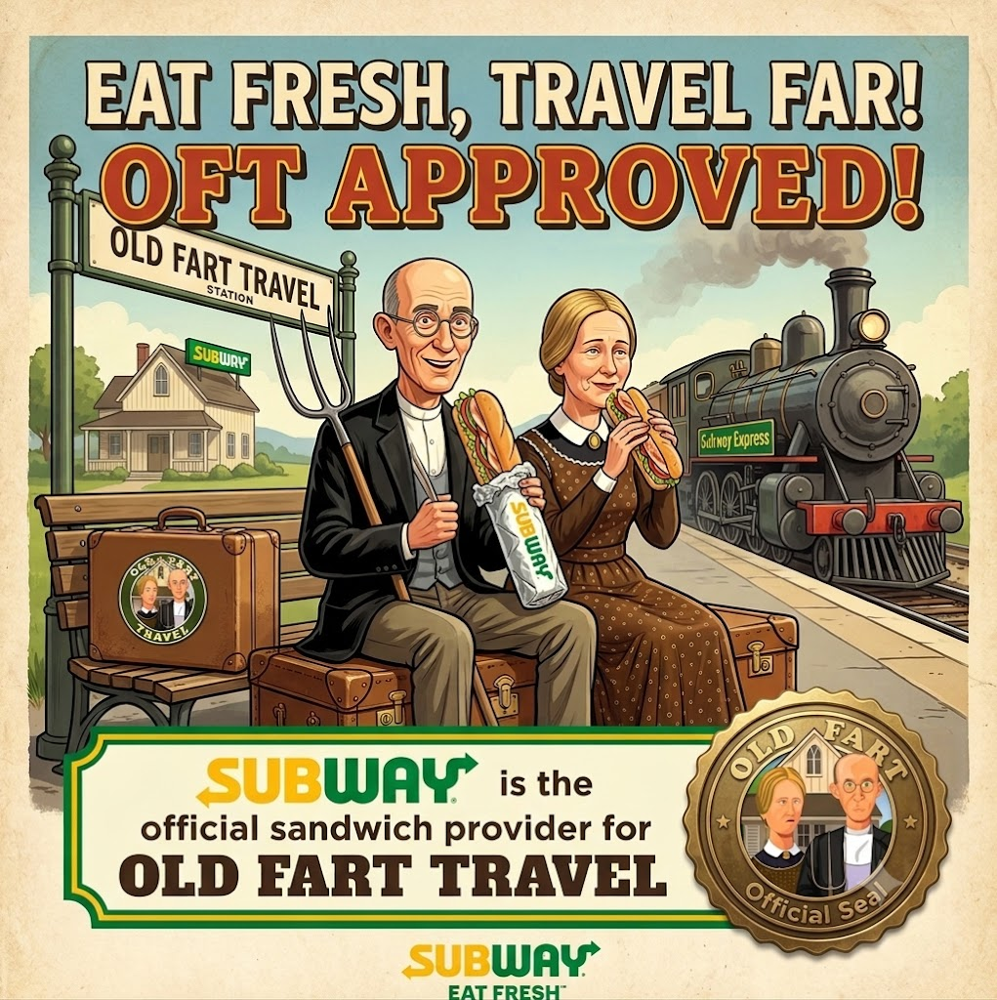

Day 12
Homeward Bound • Wednesday, August 12, 2026

🏠 ONE LAST MORNING
“Don't cry because it's over. Smile because it happened.”
Every vacation eventually comes to an end.
The memories don't.
Today, John and Robin fly home while Joan and Bill continue east in the Old Fart Cruiser.
One part of the trip ends. Another part keeps rolling.
📋 TODAY'S PLAN
12:45 p.m. — Depart Harry Reid International Airport.
Check out of Red Rock Resort by 10:00 a.m. and catch one final ride with Joan and Bill to the airport.
Joan and Bill still have one more adventure ahead.
The Old Fart Cruiser points east toward home.

🍦 THE SELIGMAN ASSIGNMENT

If you decide to travel via Route 66, you have one final assignment.
Stop in Seligman.
Visit the Snow Cap.
Check to see whether the Old Fart Travel sticker is still proudly on display.
📸 Document your findings.
If it has disappeared...
...you know what to do.

Have an ice cream cone on us...
...and drive carefully.
🛠️ TRAVEL TOOLBOX
💡 OFT TIP
Red Rock will often give you an extra hour at checkout...
...if you simply ask.
Old Farts know that sometimes the best travel hacks don't cost a dime.
Also: offer bribes. Oreos have been known to work miracles.
🤖 JACOB SAYS...
Home is nice.
But start thinking about the next trip before you finish unpacking.
➡️ TOMORROW
For John and Robin:
Laundry.
🎁 DAILY BONUS

❤️ ONE CLOSING THOUGHT.
Years from now, you'll still find yourselves saying...
“Remember the pool?”
“Remember the pancakes?”
“Remember the Monument Valley tour?”
“Remember Bill's face when the T-Bones check arrived?”
“Remember when we actually found the sticker at Snow Cap?”
That's the real souvenir.
Thanks for traveling with Old Fart Travel.
Until next time...
Drive carefully.
Come back soon.